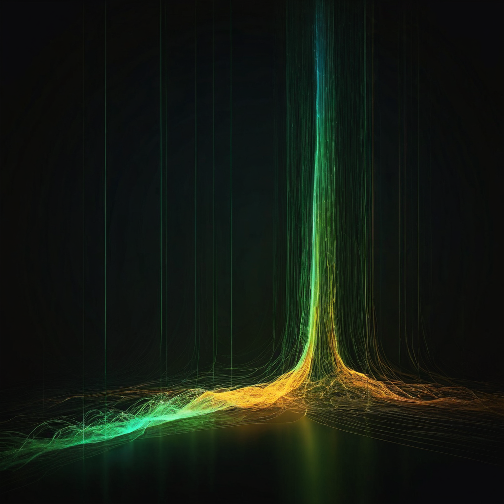

@OrangeGooey marked their birthday this year with an observation that says something real about where Chia is headed. It deserves more than a quick like.
@OrangeGooey posted on X that their birthday in 2026 landed on a notable date in Chia's supply history: the point at which XCH still held in pre-farm custody by Chia Network Inc. (CNI) dropped below the total supply earned by farmers since mainnet launch. By that date, farmers had produced more than 1 million XCH beyond what CNI holds in reserve. The post referenced an external link that did not render fully in the captured version, likely pointing to a supply or treasury tracking resource.

Chia launched in 2021 with a large pre-farm held by CNI. The intention was to fund operations, partnerships, grants, and the long-term development of the network. It was a reasonable design for a startup-backed blockchain, and CNI has been relatively transparent about how those coins are being used.
But pre-farms attract scrutiny, and for understandable reasons. When a founding entity holds a large share of supply, critics argue that the network's claims to decentralization are weakened. The counterargument is always that the block reward schedule exists precisely to dilute that concentration over time and to reward the people doing the actual work of securing the network.
The crossover @OrangeGooey noticed is evidence that the dilution is working. Farmer-earned supply has now surpassed CNI's remaining reserve. That is not just an accounting curiosity. It is a data point in the ongoing story of whether Chia's supply distribution is actually moving in the direction the design intended.
What the number says: As of @OrangeGooey's birthday in 2026, farmers had collectively earned more than 1 million XCH beyond what CNI holds in remaining pre-farm reserves. That means the cumulative output of the farming community, built up one block reward at a time since 2021, has now crossed above the institutional reserve.
What it does not say: Supply share between CNI and all farmers combined is one measure of concentration. It is not the whole picture. Farmer coins are not evenly distributed. Large farming operations, early participants, and pooled farming services hold meaningful shares. The crossover says something real about CNI's relative position, but it does not tell you how spread out the non-CNI supply actually is.
Why builders should care: If you are building on Chia or evaluating it for a project, the pre-farm has probably come up in due diligence conversations. This crossover weakens one version of the concentration argument. CNI's reserve is real and meaningful, but it is no longer the dominant share in the supply picture. That changes how some of those conversations go.
What the linked resource likely shows: The original post included a link that did not render fully in the captured version. It likely leads to a live supply or treasury dashboard. If you are tracking this number, finding that resource is worth the effort. Real-time supply data matters more than any single snapshot.
I have a soft spot for the kind of observation @OrangeGooey made here. No announcement, no marketing push. Just someone who pays close attention to Chia noticing a genuine milestone while celebrating their birthday. That is exactly the kind of community this network has built.
The pre-farm crossover is the block reward schedule doing what it was always supposed to do. I am not going to oversell what it proves, because farmer coins are not evenly distributed and concentration can show up in plenty of other places beyond CNI's reserve. But this is an honest signal worth taking seriously. The farming community has collectively produced more XCH than CNI has left in reserve. That matters.
What I find myself most curious about is what the next few years of this curve look like. As block rewards continue and CNI uses its remaining coins for operations and partnerships, that gap should widen. The direction is right, and this community keeps paying attention to the details. That matters too.
CNI's ongoing transparency about how pre-farm coins are being allocated. How the farming reward curve evolves as halvings approach. Whether pooled farming concentration becomes the next supply story worth tracking. And whatever that truncated link in the original post was pointing to.
Source: X post by @OrangeGooey, https://x.com/i/web/status/2078570355132674499, Retrieved 2026-07-18.
External references: One link was included in the original post but did not fully render in the captured version (partial: https://t.co/7EGxQ113tL). The destination is unknown and should be verified before publication.